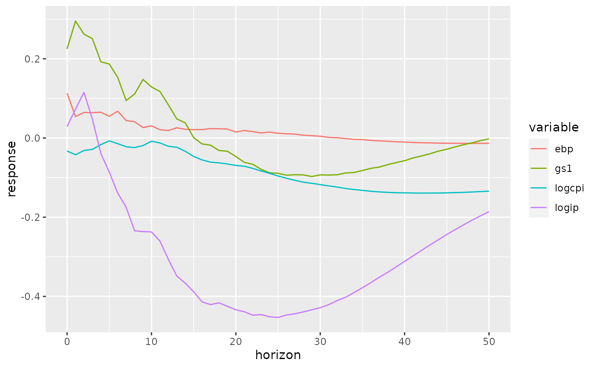

varexternalinstrument.RmdThe library is designed to work with the R vars package, though an interface is available to work with a generic set of reduced form residuals.
The package includes the replication data from Gertler Karadi (the original data can be found here).
The library integrates easily with the vars package. The following example illustrates how to replicate the main result from Gertler and Karadi (2015).
library(vars)
library(varexternalinstrument)
data(GKdata)
gkvar <- VAR(GKdata[, c("logip", "logcpi", "gs1", "ebp")], p = 12, type = "const")
shockcol <- externalinstrument(gkvar, GKdata$ff4_tc, "gs1")
shockcol
#> logip logcpi gs1 ebp
#> 0.02886238 -0.03275585 0.22507245 0.11296773The result, shockcol contains the instaneous response of each of the variables in the VAR to a shock to gs1 (in this case, the monetary policy indicator). This can then be used to create IRFs, etc.
Here I use the Phi function from the vars package, which gives the moving average representation of an estimated var over a given finite horizon. I construct 20 period IRFs, mimicking figure 1 from Gertler & Karadi (2015).
library(tidyr)
library(dplyr)
library(ggplot2)
ma_representation <- Phi(gkvar, 50)
irfs <- apply(ma_representation, 3, function(x) x %*% shockcol)
irfs <- as.data.frame(t(irfs))
colnames(irfs) <- names(shockcol)
irfs <- mutate(irfs, horizon = 0:50)
irfs <- gather(irfs, key = variable, value = response, -horizon)
ggplot(irfs, aes(x = horizon, y = response, group = variable, color = variable)) + geom_line()